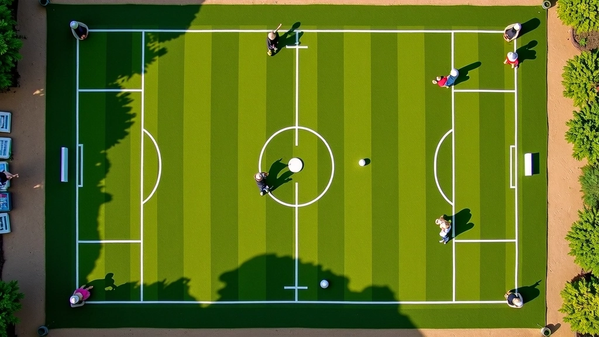

برنامج تأسيسي
أساسيات استراتيجية التقشير والترك
برنامج يغطي المبادئ الأساسية لفهم واتقان تقنية التقشير والترك، مع التركيز على حساب الزوايا والمسافات الدقيقة. يشمل 6 وحدات تطبيقية في حدائق المنتزه بالإسكندرية.
مشاريع عملية وورش تطبيقية في استراتيجية الكروكيه
برنامج يغطي المبادئ الأساسية لفهم واتقان تقنية التقشير والترك، مع التركيز على حساب الزوايا والمسافات الدقيقة. يشمل 6 وحدات تطبيقية في حدائق المنتزه بالإسكندرية.

دورة موجهة للاعبين ذوي الخبرة تركز على استراتيجيات التمواضع المعقدة وكيفية السيطرة على الملعب. تتضمن تحليلات عملية لسيناريوهات لعب مختلفة وتقنيات الترك الاحترافية.
برنامج يجمع بين التحليل النظري والممارسة العملية في بيئة المنافسة الفعلية. يركز على اتخاذ القرارات السريعة وإدارة الضغط النفسي خلال المباريات الرسمية.
ورشة تفاعلية تعلم المشاركين كيفية قراءة ظروف الملعب بدقة وتحليل تأثير العوامل الخارجية على الأداء. تتضمن جلسات عملية مباشرة مع تطبيق فوري للتقنيات المستفادة.
تواصل معنا لمعرفة تفاصيل أكثر عن برامجنا والبدء في رحلتك لإتقان استراتيجية التقشير والترك
تواصل معنا الآن